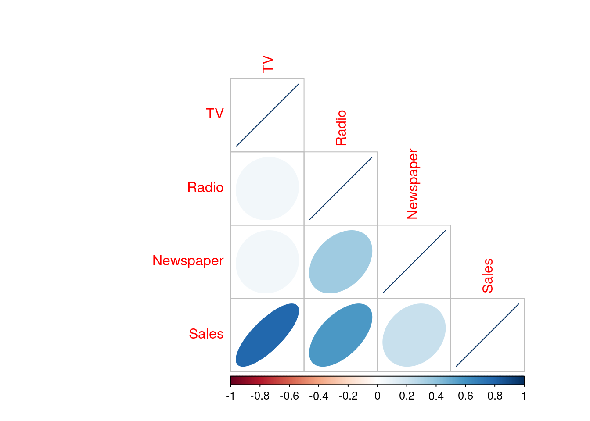
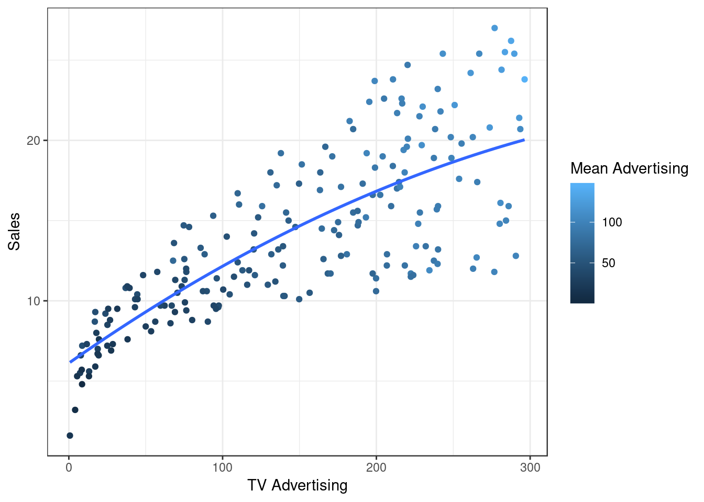
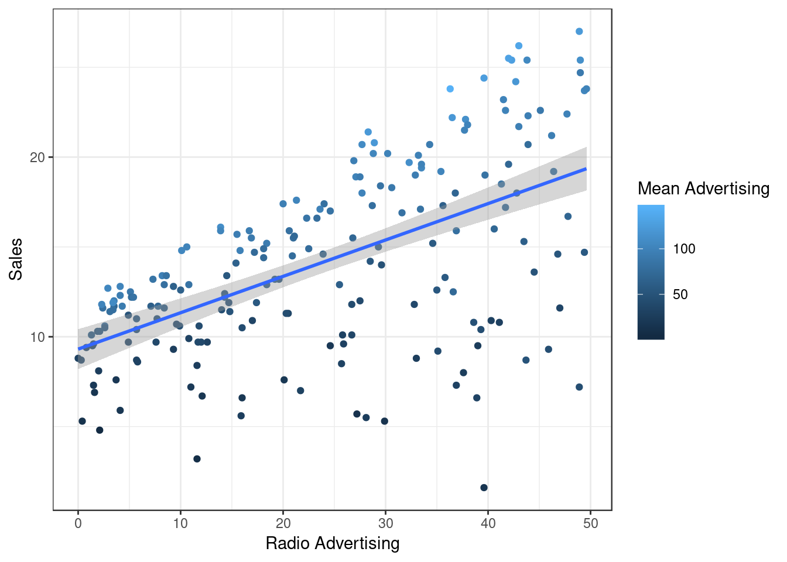
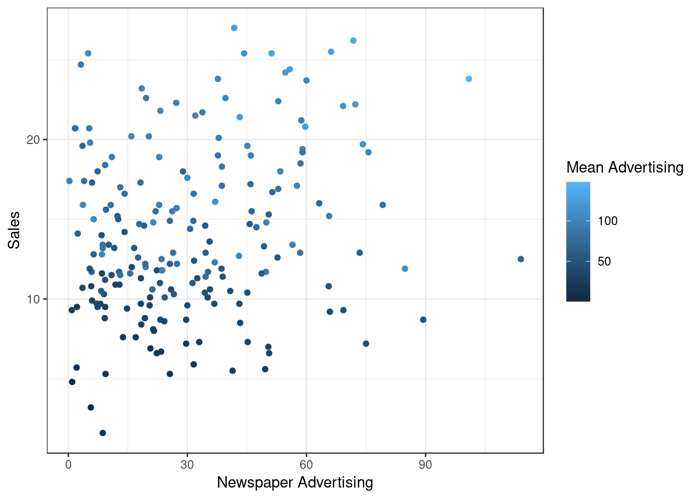
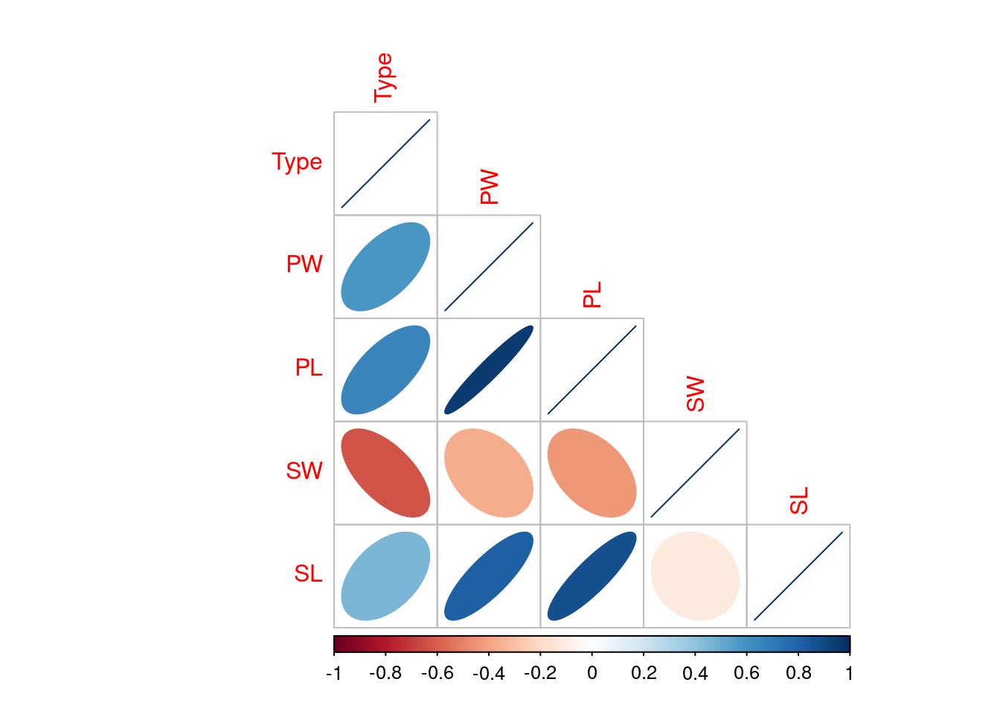
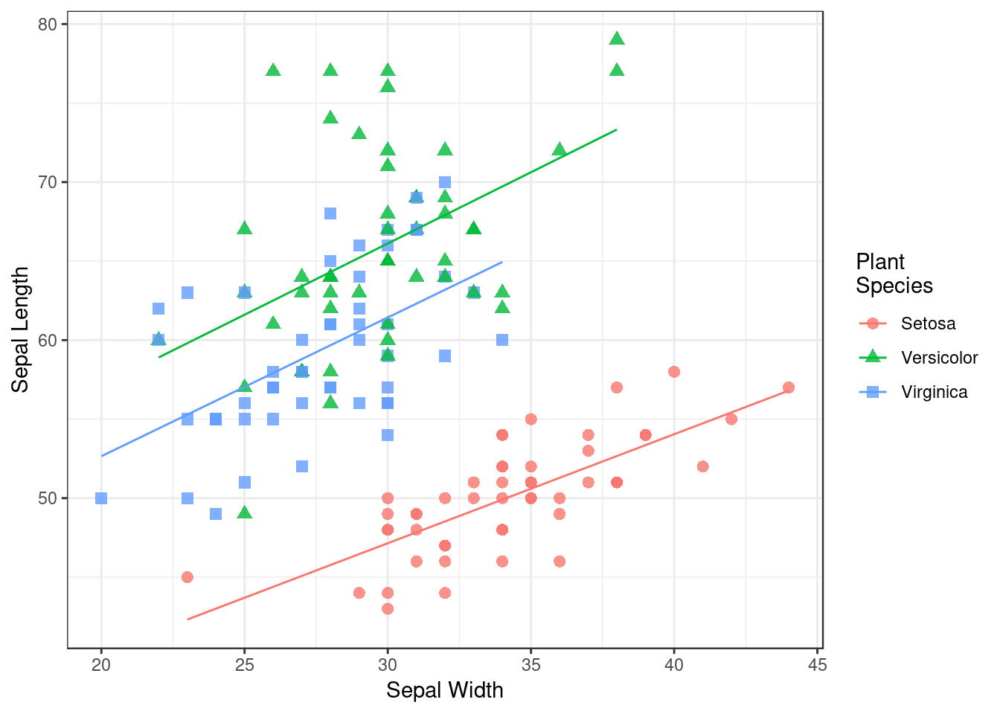

Chapter 4 Exercises (Part 2)
4.1 Advertising Data
4.1.1 Import the Advertising Data
Import the Advertising Data:
adv <- read.csv(file = "Datasets/Advertising(2).csv", header = TRUE, sep = ",")4.1.2 Explore and describe the data set
Use head() and str() to get an understanding of the data:
head(adv)## TV Radio Newspaper Sales
## 1 230.1 37.8 69.2 22.1
## 2 44.5 39.3 45.1 10.4
## 3 17.2 45.9 69.3 9.3
## 4 151.5 41.3 58.5 18.5
## 5 180.8 10.8 58.4 12.9
## 6 8.7 48.9 75.0 7.2str(adv)## 'data.frame': 200 obs. of 4 variables:
## $ TV : num 230.1 44.5 17.2 151.5 180.8 ...
## $ Radio : num 37.8 39.3 45.9 41.3 10.8 48.9 32.8 19.6 2.1 2.6 ...
## $ Newspaper: num 69.2 45.1 69.3 58.5 58.4 75 23.5 11.6 1 21.2 ...
## $ Sales : num 22.1 10.4 9.3 18.5 12.9 7.2 11.8 13.2 4.8 10.6 ...So it looks like some quantitative measurement related to advertising accross various genres, so let’s get a summary of it:
summary(adv)## TV Radio Newspaper Sales
## Min. : 0.70 Min. : 0.000 Min. : 0.30 Min. : 1.60
## 1st Qu.: 74.38 1st Qu.: 9.975 1st Qu.: 12.75 1st Qu.:10.38
## Median :149.75 Median :22.900 Median : 25.75 Median :12.90
## Mean :147.04 Mean :23.264 Mean : 30.55 Mean :14.02
## 3rd Qu.:218.82 3rd Qu.:36.525 3rd Qu.: 45.10 3rd Qu.:17.40
## Max. :296.40 Max. :49.600 Max. :114.00 Max. :27.004.1.3 Create Scatter Plots of the Data
4.1.3.1 First consider all possible correlations using corrplot
cormatadv <- cor(adv)
corrplot(method = 'ellipse', type = 'lower', corr = cormatadv)
looking at this plot it appears that TV is most correlated with sales:
4.1.3.2 Sales vs TV Advertising
adv$MeanAdvertising <- rowMeans(adv[,c(!(names(adv) == "Sales"))])
ggplot(data = adv, aes(x = TV, y = Sales, col = MeanAdvertising)) +
geom_point() +
theme_bw() +
stat_smooth(method = 'lm', formula = y ~ poly(x, 2, raw = TRUE), se = FALSE) +
# stat_smooth(method = 'lm', formula = y ~ log(x), se = FALSE) +
labs(col = "Mean Advertising", x= "TV Advertising") 
ggplot(data = adv, aes(x = Radio, y = Sales, col = MeanAdvertising)) +
geom_point() +
theme_bw() +
labs(col = "Mean Advertising", x= "Radio Advertising") +
geom_smooth(method = 'lm')
padv <- ggplot(data = adv, aes(x = Newspaper, y = Sales, col = MeanAdvertising)) +
geom_point() +
theme_bw() +
labs(col = "Mean Advertising", x= "Newspaper Advertising")
padv
#Thise could be combined into an interactive graph by wrapping in ggplotly(padv)It appears that tv advertising is positively correlated with sales, however more advertising leads to less certain increases and diminishing returns, radio advertising is much the same but with less certainty than TV advertising. Their appears to be no correlation between Newspaper advertising and sales.
4.2 iris Data
4.2.1 Import the iris Data
The iris data has alread been imported and assigned the variable iris.
4.2.2 Explore and describe the data set
The iris data set can be explored using head() and str()
head(iris)## Type PW PL SW SL
## 1 0 2 14 33 50
## 2 1 24 56 31 67
## 3 1 23 51 31 69
## 4 0 2 10 36 46
## 5 1 20 52 30 65
## 6 1 19 51 27 58str(iris)## 'data.frame': 150 obs. of 5 variables:
## $ Type: int 0 1 1 0 1 1 2 2 1 2 ...
## $ PW : int 2 24 23 2 20 19 13 16 17 14 ...
## $ PL : int 14 56 51 10 52 51 45 47 45 47 ...
## $ SW : int 33 31 31 36 30 27 28 33 25 32 ...
## $ SL : int 50 67 69 46 65 58 57 63 49 70 ...The data set can be described using the summary() function
summary(iris)## Type PW PL SW
## Min. :0 Min. : 1.00 Min. :10.00 Min. :20.00
## 1st Qu.:0 1st Qu.: 3.00 1st Qu.:16.00 1st Qu.:28.00
## Median :1 Median :13.00 Median :44.00 Median :30.00
## Mean :1 Mean :11.93 Mean :37.79 Mean :30.55
## 3rd Qu.:2 3rd Qu.:18.00 3rd Qu.:51.00 3rd Qu.:33.00
## Max. :2 Max. :25.00 Max. :69.00 Max. :44.00
## SL
## Min. :43.00
## 1st Qu.:51.00
## Median :58.00
## Mean :58.45
## 3rd Qu.:64.00
## Max. :79.004.2.3 Create Scatter Plots of the Data
coriris <- cor(iris[,!(names(iris) == "Species")])
corrplot(method = 'ellipse', type = 'lower', corr = coriris) because sepal width and sepal length appear to be the most independent we will create a linear regression of those variables:
#Make the datatype a factor
iris$Type <- as.factor(iris$Type)
ggplot(data = iris, aes(x = SW, y = SL, col = Type, shape = Type)) +
geom_point(size = 2.5, alpha = 0.8) +
theme_bw() +
labs(col = "Plant Species", shape= "Plant\nSpecies", x = "Sepal Width", y = "Sepal Length") +
geom_smooth(method = 'lm', se = FALSE, lwd = 0.5) +
# It is necessary to use scale_shape_discrete in order to change the labels:
#make sure the names match, if the legend names match, they'll be merged.
scale_shape_discrete(name ="Plant\nSpecies",
breaks=c("0", "1", "2"),
labels=c("Setosa", "Versicolor", "Virginica")) +
scale_color_discrete(name ="Plant\nSpecies",
breaks=c("0", "1", "2"),
labels=c("Setosa", "Versicolor", "Virginica"))
# This could have also been done with the built in iris data set, that was where I got the legend labels from